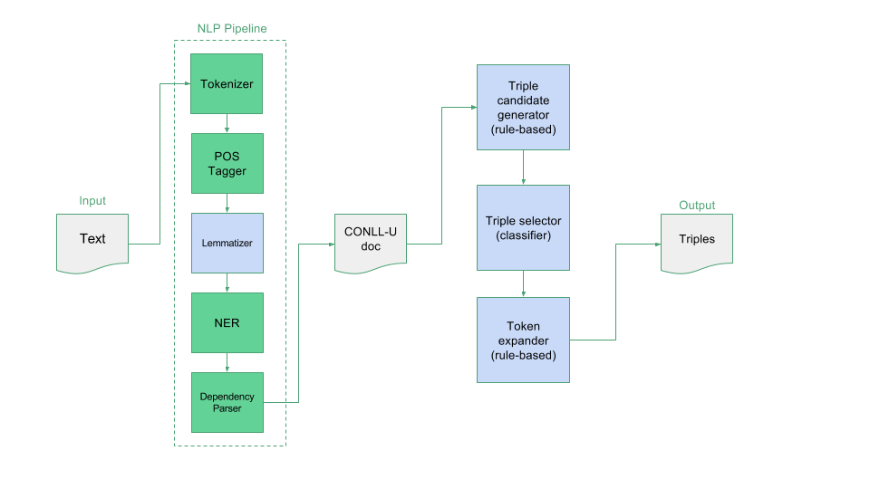
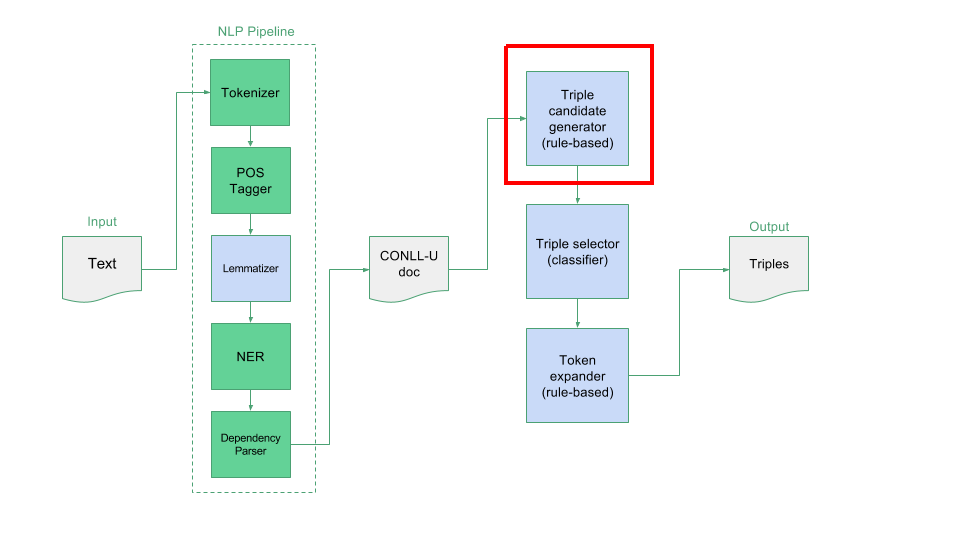
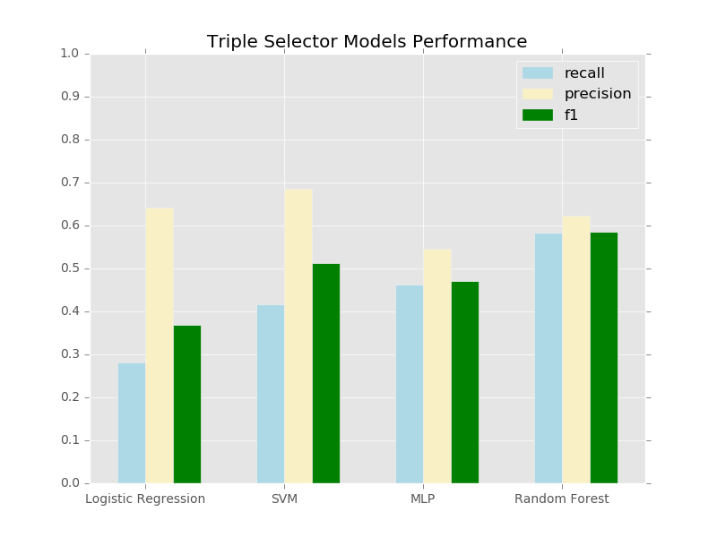

Open Domain Information Extraction dari Teks Bahasa Indonesia
Oleh: Yohanes Gultom - 1506706345Pembimbing: Ir. Wahyu Catur Wibowo M.Sc., Ph.D.
Kerangka Presentasi
- Pendahuluan
- Rancangan Sistem
- Implementasi Sistem
- Evaluasi dan Analisis
- Penutup
Pendahuluan
Latar belakang, masalah, tinjauan pustakaLatar Belakang
- Kebutuhan akan proses ekstraksi informasi otomatis dari dokumen lintas domain
- Open domain information extraction (open IE) dapat mengekstrak informasi dari dokumen lintas domain
- Belum ada sistem open IE untuk bahasa Indonesia
Masalah
Input
Sembungan adalah sebuah desa yang terletak di kecamatan
Kejajar, kabupaten Wonosobo, Jawa Tengah, Indonesia.
Output
(Sembungan, adalah, desa)
(Sembungan, terletak di, kecamatan Kejajar)
Perbandingan Karakteristik
| Information Extraction | Open IE | Knowledge Extraction | |
|---|---|---|---|
| Domain | Tertutup (Cowie and Lehnert, 1996) |
Terbuka (Banko et al., 2007) |
Terbuka (Auer et al., 2007) |
| Format | Tergantung domain (Cowie and Lehnert, 1996) |
Triples (Banko et al., 2007) |
RDF Triples (Auer et al., 2007; Exner and Nugues, 2014) |
| Ontologi | Tidak tersedia (Cowie and Lehnert, 1996) |
Opsional (Etzioni et al., 2011) |
Wajib (Auer et al., 2007) |
Tiga Langkah/Fase Open IE
(Etzioni et al., 2011)
-
Label (label)
Membangun dataset klasifikasi triple
-
Belajar (learn)
Melatih classifier untuk mengekstrak triple dari kalimat
-
Ekstrak (extract)
Mengekstrak triple dari kalimat menggunakan classifier
Tinjauan Pustaka
| Fase | TextRunner (Banko et al., 2007) | ReVerb (Fader et al., 2011) | R2A2 (Etzioni et al., 2011) | Ollie (Schmitz et al., 2012) | Stanford Open IE (Angeli et al., 2015) |
|---|---|---|---|---|---|
| Label | NP chunker + dependency parser + aturan (otomatis) | NP chunker + aturan sintaktik & leksikal + anotasi relasi (manual) | ReVerb + anotasi argumen (manual) | ReVerb + dependency parser + anotasi open pattern (manual) | Dependency parser + anotasi clause splitter (manual) |
| Belajar | NP chunker + NBC | NP chunker + aturan + logistic regression | ReVerb + REPTree + CRF | Dependency parser + open pattern learning | Dependency parser + logistic regression |
| Ekstrak | NP chunker + NBC + normalization + merging | NP chunker + rules + logistic regression | ReVerb + REPTree + CRF | Dependency parser + open pattern learning + context analysis | Dependency parser + logistic regression + natural logic + atomic patterns |
Rancangan Sistem
NLP Pipeline, Triple Candidate Generator, Triple Selector, Token ExpanderTiga Langkah/Fase Open IE
-
Label
Dependency parser + NER + aturan + anotasi triple (manual). Mirip (Fader et al., 2011) tapi dengan NER dan NP chunker diganti dengan aturan yang terinsipirasi (Angeli et al., 2015)
-
Belajar
Dependency parser + NER + aturan + random forest. Mirip (Banko et al., 2007) tapi menggunakan random forest
-
Ekstrak
Dependency parser + NER + aturan + random forest. Mirip (Banko et al., 2007) tapi menggunakan random forest dan hanya menggunakan merging sederhana tanpa normalisasi
Diagram Alir Fase Ekstrak
NLP Pipeline

Contoh Input dan Output NLP Pipeline
Sembungan adalah sebuah desa yang terletak di kecamatan
Kejajar, kabupaten Wonosobo, Jawa Tengah, Indonesia.

Kolom atau atribut CoNLL-U (Nivre et al., 2016)
| ID | Indeks token dalam kalimat |
|---|---|
| FORM | Bentuk asli dari token |
| LEMMA | Bentuk kamus dari token |
| UPOSTAG | POS tag universal |
| XPOSTAG | POS tag spesifik untuk bahasa tertentu |
| FEATS | Fitur tambahan atau spesifik untuk bahasa tertentu |
| HEAD | ID token yang merupakan kepala (head) dari token ini |
| DEPREL | Dependency relation universal |
| DEPS | Dependency graph khusus atau spesifik untuk bahasa tertentu |
| MISC | Anotasi tambahan yang belum tercakup di anotasi lainnya |
Algoritma NLP Pipeline
-
PTBTokenizer (Manning et al., 2014)Digunakan tanpa perubahan atau kontekstualisasi
-
MaxentTagger (Toutanova et al., 2003)Akurasi per token 93.68%, akurasi per kalimat 63.91%
-
Indonesian Lemmatizer (Suhartono, 2014)Akurasi 99%
-
Named-Entity CRFClassifier (Finkel et al., 2005)Precision 0.86, Recall 0.85, F1 0.86
-
Transition-Based Neural Network Dependency Parser (Chen and Manning, 2014)Unlabeled 70%, Labeled 46%
Dataset NLP Pipeline
-
POS Tag & DependencyUD treebank Indonesia (5,036 kalimat latih + 559 kalimat uji) https://github.com/UniversalDependencies/UD_Indonesian
-
LemmatizerLemmatizer Indonesia (5,638 kata uji) https://github.com/davidchristiandy/lemmatizer
-
NERDataset kuliah NLP Fasilkom UI 2016 (1,700 kalimat latih + 426 kalimat uji) dan NER Indonesia (1,835 kalimat latih) https://github.com/yusufsyaifudin/indonesia-ner
Triple Candidate Generator
Aturan Pembangkitan Kandidat Triple
| Jenis | Kondisi |
|---|---|
| Subjek |
|
| Predikat |
|
| Objek |
|
Triple Selector

Fitur Klasifikasi
|
|
Token Expander

Aturan Ekspasi Token Subjek dan Objek
| No | Kondisi untuk token subjek atau objek | Aksi |
|---|---|---|
| 1 | Jika relasi dependent di antara (”compound”, ”name”, ”amod”) | Ekspansi |
| 2 | Jika dependent memiliki named-entity yang sama dengan token | Ekspansi |
| 3 | Jika dependent dan token berada dalam kutipan (quote) | Ekspansi |
| 4 | Jika token merupakan root kalimat | Abaikan |
| 5 | Jika POS tag dependent CONJ atau termasuk simbol (”,”, ”/”) | Abaikan |
| 6 | Jika POS tag dependent termasuk (”VERB”, ”ADP”) | Abaikan |
| 7 | Jika dependent memiliki dependent dengan POS tag ”ADP” | Abaikan |
| 8 | Jika POS tag dependent di antara (”CONJ”, ”ADP”) dan berada di depan frase | Buang |
| 9 | Jika dependent merupakan tanda kurung yang tidak lengkap | Buang |
| 10 | Jika dependent merupakan kata ”yang” diakhir frase | Buang |
| 11 | Lain-lain | Abaikan |
Aturan Ekspasi Token Predikat
| No | Kondisi untuk token predikat | Aksi |
|---|---|---|
| 1 | Jika dependent adalah “tidak” | Ekspansi |
| 2 | Lain-lain | Abaikan |
Implementasi Sistem
Pustaka pemrograman dan demoHasil Implementasi
-
Implementasi dengan Java & Python dengan pustaka utama:
- Stanford Core NLP: algoritma NLP
- Sckit-Learn: algoritma machine learning
- Gradle: build & distribution
- Repositori publik: https://github.com/yohanesgultom/id-openie
- Demo
Evaluasi dan Analisis
Hasil eksperimen dan analisis
Evaluasi
k-Fold Cross Validation (k = 3)

Analisis
Hasil eksperimen pertama di mana nilai $F_1$ tertinggi hanya 0.58, mengindikasikan bahwa semua model mengalami kesulitan untuk mempelajari pola \textit{triples} dari \textit{dataset} yang diberikan. Kemungkinan penyebab hasil ini adalah masalah pada model (pemilihan fitur atau algoritma) atau kualitas \textit{dataset} yang digunakan (konflik pola atau ketidaklengkapan pola \textit{dataset}). Untuk memastikan penyebab dari hasil eksperimen pertama ini, \saya~melakukan eksperimen tambahan yaitu menguji tiap model \textit{triple selector} menggunakan \textit{dataset} latih (data yang sama). Hasil cukup baik yang ditunjukkan pada Gambar \ref{fig:models_performance_training} dan Tabel \ref{tab:models_performance_training}, di mana $F_1$ tertinggi \textbf{0.83}, \textit{recall} tertinggi \textbf{0.96} dan \textit{precision} tertinggi \textbf{0.88}, menunjukkan bahwa fitur yang dipilih dan model yang digunakan tidak memiliki masalah (kecuali model linier, \textit{logistic regression}). Oleh karena itu \saya~berargumen bahwa masalah utama terdapat pada \textit{dataset} yang digunakan, yaitu tidak cukupnya pola $\nicefrac{2}{3}$ data yang dipakai melatih untuk mengenali pola sisa $\nicefrac{1}{3}$ data yang dipakai untuk menguji.

Uji Waktu Proses
| Jumlah kalimat | Triple | Total (detik) | Per kalimat (detik) |
|---|---|---|---|
| 2 | 7 | 6.1 | 0.800 |
| 138 | 429 | 11.3 | 0.082 |
| 5,593 | 19,403 | 78.6 | 0.014 |
Analisis Uji Waktu Proses
Sebagai tambahan, hasil eksperimen kedua menunjukkan bahwa waktu rata-rata 0.014 detik/kalimat yang dibutuhkan sistem \textit{open IE} untuk mengekstrak \textit{triple} dari dokumen yang berukuran 5,593 kalimat, cukup sebanding dengan sistem lain seperti \textsc{TextRunner} yang membutuhkan 0.036 detik/kalimat \citep{banko2007open}. Hal ini menunjukkan bahwa penggunaan fitur \textit{heavy linguistic} cukup efisien juga digunakan pada dokumen yang berukuran 138 - 5,593 kalimat. Kekurangan dari sistem ini tentu ada pada ekstraksi pada dokumen dengan kalimat kurang dari 138. Selain itu juga kedepannya perlu dikaji sejauh skalabilitas sistem ini dengan melakukan ekstraksi pada dokumen dengan jumlah kalimat lebih banyak.
Penutup
Kesimpulan dan saranKesimpulan
- Kombinasi NLP pipeline dasar (POS tagging, lemmatization, NER dan dependency parsing) berbasis Universal Dependency, model heuristik dan supervised learning dapat melakukan open domain information extraction (open IE) dalam format triple (subjek, predikat, objek) dari teks bahasa Indonesia secara otomatis
- Model supervised-learning yang paling sesuai untuk melakukan seleksi triple berdasarkan fitur berbasis POS tag, named-entity dan dependency relation adalah random forest, yang merupakan ensemble classifier. Model ini mencapai nilai $F_1$ 0.58, yang lebih tinggi dari tiga model linier dan nonlinier lain yang diujikan
- Sistem open IE yang diajukan dapat melakukan ekstraksi 19,403 triple dari dokumen yang terdiri atas 5,593 kalimat bahasa Indonesia dalam waktu 78.6 detik atau 0.014 detik/kalimat. Dapat disimpulkan bahwa sistem ini cukup efisien untuk digunakan pada dokumen berukuran lebih besar dari 138 kalimat dan kurang dari 5,593 kalimat.
Saran
- Memperbaiki kualitas dataset untuk melatih triple selector dengan menambah lebih banyak data
- Mengembangkan triple candidate generator untuk bisa mengekstraksi kandidat triple implisit dan mengurangi kandidat triple yang invalid
- Menggunakan kombinasi antara ensemble classifier seperti random forest dan classifier berpresisi tinggi seperti SVM sebagai triple selector untuk meningkatkan precision dan $F_1$ score
- Melakukan pengujian sistem secara keseluruhan dengan dokumen yang lebih besar (berisi lebih banyak kaliat) serta membangun dataset untuk bisa mengevaluasi keseluruhan sistem secara lebih reliable